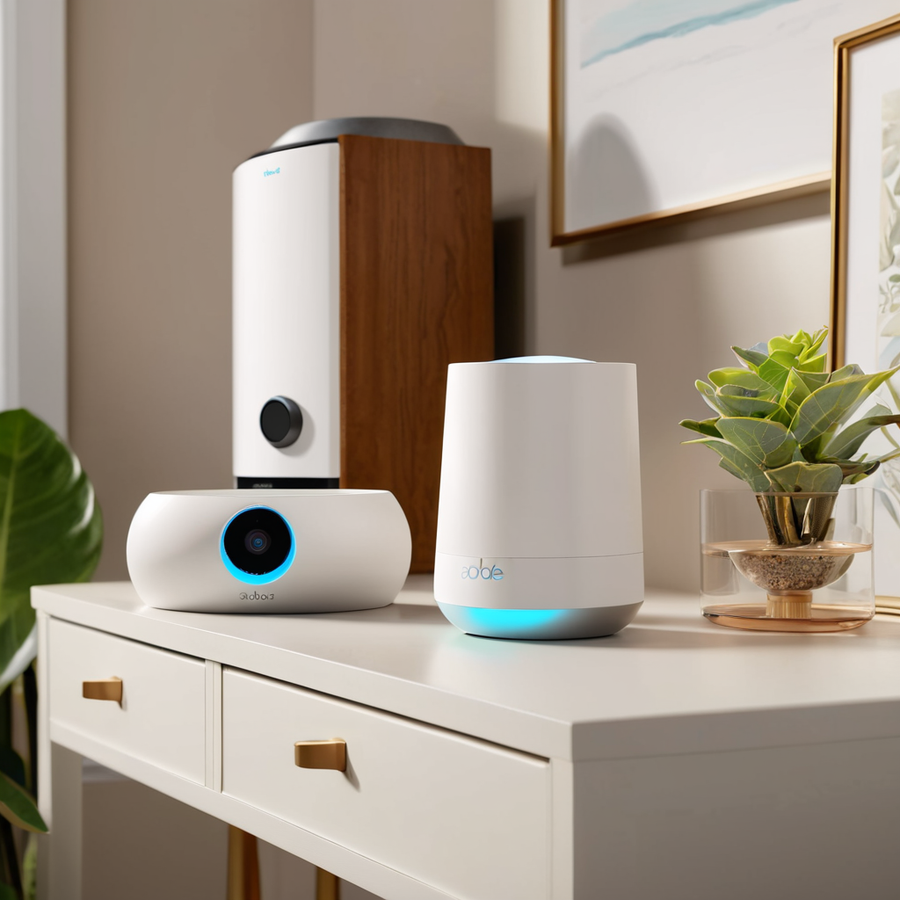
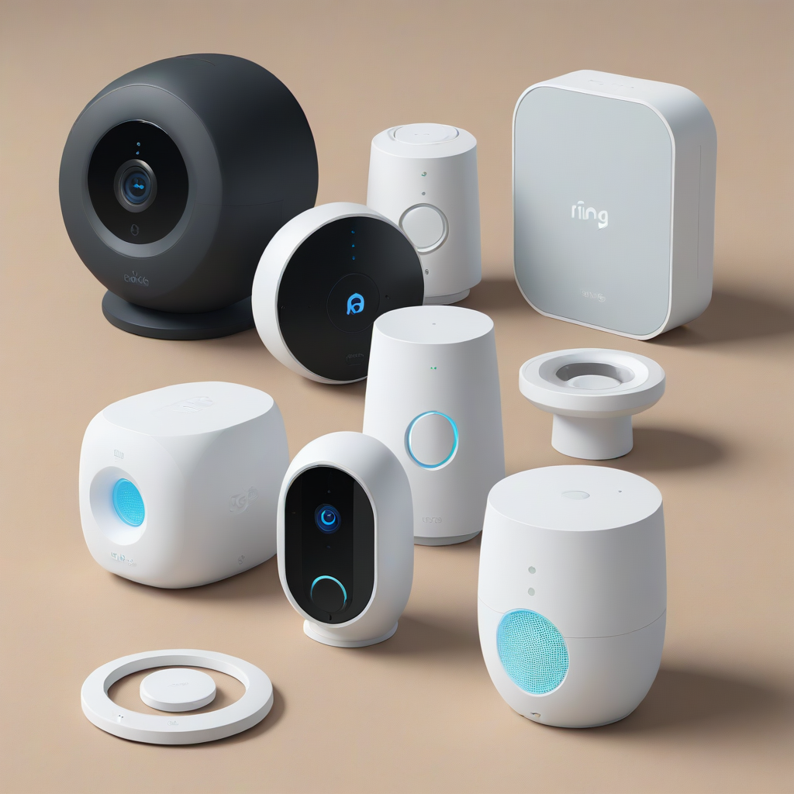
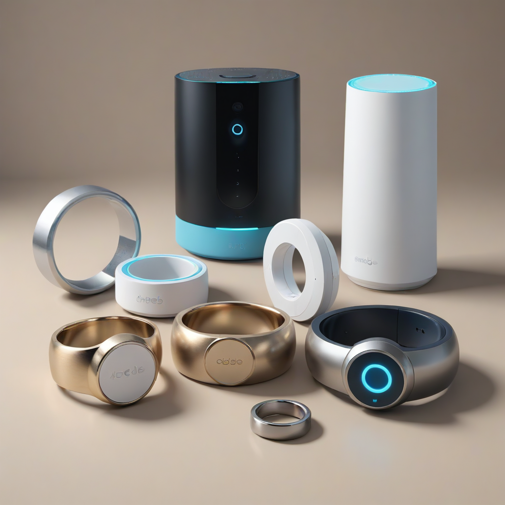

In the landscape of home safety, the decision to protect your property is no longer about buying a single device; it is about choosing a comprehensive security strategy. As we move through 2026, the market for DIY home security systems has matured significantly, offering homeowners robust alternatives to traditional, hardwired alarm systems. Whether you are a homeowner looking to secure a mortgage requirement or a renter needing a portable solution, the choice between Ring vs SimpliSafe vs Abode 2026 represents the three pillars of modern wireless protection.
Security is not just about preventing break-ins; it is about peace of mind, fire detection, and emergency response. The right system integrates seamlessly into your daily life without creating friction. This guide cuts through the marketing hype to provide a factual, safety-focused comparison of these industry leaders. We will examine hardware durability, monitoring costs, smart home compatibility, and the critical features you need to keep your family safe. By understanding the nuances of each platform, you can make an informed decision that aligns with your safety needs and financial boundaries.
The Landscape of DIY Security in 2026

The shift toward wireless alarm system comparison has been driven by the desire for flexibility and affordability. Ten years ago, installing a security system required drilling into walls, running coaxial cables, and signing long-term contracts with alarm companies. Today, the best home security system 2026 is typically wireless, battery-powered, and managed via a smartphone app. The three contenders we are analyzing today—Ring, SimpliSafe, and Abode—each represent a different philosophy in the security space.
Ring has leveraged its massive brand recognition in video doorbells to create a cohesive ecosystem focused on video verification and community features. SimpliSafe has maintained its reputation for simplicity and reliability, focusing on a plug-and-play experience with strong professional monitoring. Abode distinguishes itself by offering local control and deep integration with smart home standards like Matter and Apple HomeKit, appealing to users who prioritize privacy and automation over cloud dependency. Understanding these core philosophies is the first step in narrowing down your options.
When evaluating these systems, safety should be your primary metric, followed by reliability and cost. A system that is cheap but fails to arm or misses a sensor trigger is a liab

Ring Alarm: The Ecosystem Powerhouse
Ring, owned by Amazon, has aggressively expanded its security portfolio to challenge the traditional alarm industry. The core of their offering is the Ring Alarm Pro base station, which now includes a built-in eero Wi-Fi 6 router. This dual-functionality makes it incredibly attractive for tech-savvy users who want to consolidate their networking and security. The system relies heavily on the Ring app, which is intuitive and allows for easy video verification, meaning emergency dispatchers can see what is happening before they send help.
One of the standout features of the Ring ecosystem is its video integration. Unlike competitors that treat cameras as an afterthought, Ring is built around video. If you already own a Ring doorbell or camera, adding an alarm system is seamless. The sensors communicate directly with the base station, and alerts are pushed instantly to your mobile device. However, reliance on the cloud is a significant factor. Ring's smart features are tied to a subscription, specifically Ring Protect, which is necessary for video recording and certain advanced automations.
For the Ring Alarm vs SimpliSafe debate, Ring often wins on price of entry. The starter kits are very affordable, sometimes available for under $100. However, the monthly monitoring costs can add up if you want the full video protection suite. The system supports 2.4GHz and 5GHz Wi-Fi, and the cellular backup is included on higher-tier plans, ensuring you stay connected even if your internet goes down. Ring also introduced battery backup on their base station in 2025, addressing a critical security gap where power outages used to disable the Wi-Fi connection.
- Pros: Deep Amazon/Alexa integration, excellent video verification, affordable starter kits, built-in Wi-Fi router on Pro model.
- Cons: Requires subscription for video features, some privacy concerns regarding cloud storage, reliance on Wi-Fi stability.
- Best For: Existing Ring camera owners, Amazon Alexa users, budget-conscious buyers.
Privacy is a consideration for some users. Since Ring is a subsidiary of Amazon, data is processed through Amazon's cloud infrastructure. While Ring has updated its privacy policies in 2026 to offer more granular control, users who demand local storage may find Ring less appealing than Abode. The system is designed to be simple, not complex, which means customization options for automation rules are somewhat limited compared to competitors.
SimpliSafe: The Reliability Standard
SimpliSafe has long been the gold standard for wireless alarm system comparison due to its straightforward business model and hardware durability. The 15th Generation system released in late 2025 introduced enhanced cellular connectivity and improved battery life on contact sensors. SimpliSafe focuses on the core function of security: detecting an intrusion and alerting authorities quickly. They do not distract with unnecessary video features unless you purchase their specific camera add-ons.
The standout feature of SimpliSafe is its professional monitoring. Unlike Ring or Abode, where monitoring is often an optional add-on or tied to video verification, SimpliSafe makes monitoring the centerpiece. Their monitoring centers are UL-certified and TMA-certified, ensuring that when an alarm is triggered, the protocol is followed strictly. They offer a 30-day money-back guarantee and lifetime warranty on certain components, which signals confidence in their product quality.
Installation is remarkably simple. The base station connects to your Wi-Fi, and sensors are peel-and-stick. There are no tools required. The system uses a proprietary radio frequency that operates on a dedicated channel, reducing interference from Wi-Fi or Bluetooth devices. This is a crucial detail for safety; a system that drops packets during a critical moment is useless. SimpliSafe's keypad is also larger and more tactile than competitors, making it easier for elderly users or those with limited dexterity to arm and disarm.
- Pros: UL-certified monitoring centers, no contracts required, excellent battery life on hardware, lifetime warranty on base station.
- Cons: Limited smart home integration compared to Abode, cameras are sold separately, no local storage option.
- Best For: Families prioritizing safety over smart features, seniors, users who want a contract-free experience.
Regarding the Ring alarm vs SimpliSafe comparison, SimpliSafe wins on monitoring reliability. While Ring is good, SimpliSafe's entire business model is built around the alarm industry standards rather than consumer electronics. They also offer a 2-way talk feature on their keypad and cameras without requiring a video subscription for basic arm/disarm functions. However, if you want deep smart home automation where lights turn on when the alarm arms, SimpliSafe is less flexible than Abode.
Abode: The Smart Home Integrator
Abode smart home security review consistently highlights its unique position as a privacy-focused, highly customizable system. Abode is the only one of the three that supports Apple HomeKit Secure Video without requiring a third-party bridge. This makes it the undisputed choice for iPhone users who want their security system to live natively within the Home app. The Abode Iota and Iota 2 base stations offer local processing, meaning your camera footage can be stored on a local drive rather than the cloud.
The technology behind Abode is robust. It utilizes Z-Wave and Zigbee protocols, allowing it to talk to a wider range of smart home devices than Ring or SimpliSafe. You can program your thermostat to lower when the system arms, or have smart locks engage automatically when you leave home. This level of automation creates a layered security approach. If someone tries to bypass the door sensor, the lights can turn on to simulate occupancy, deterring potential intruders before they even enter.
Abode offers both monitored and unmonitored plans. You can purchase the hardware and use the system as a local alarm if you prefer not to pay monthly fees. While this saves money, it removes the professional emergency dispatch safety net. For those who want monitoring, Abode partners with Alarm.com, providing a high level of reliability. The system also features a built-in siren on the base station, which is louder than the external sirens offered by some competitors.
- Pros: Apple HomeKit native support, local storage options, extensive Z-Wave/Zigbee compatibility, flexible monitoring plans.
- Cons: Higher upfront hardware cost, slightly more complex setup for non-tech users, proprietary sensors can be pricey.
- Best For: Apple HomeKit users, smart home enthusiasts, privacy-conscious homeowners.
In terms of hardware quality, Abode sensors are compact and use high-quality magnets. The motion detectors feature pet immunity, allowing dogs up to 50 pounds to roam without triggering a false alarm. However, the ecosystem is more expensive out of the box. A full Abode setup with cameras and locks will cost significantly more than a basic Ring or SimpliSafe kit. This makes it a premium choice for those willing to invest in a comprehensive smart home infrastructure.
Head-to-Head Feature Comparison
To visualize the differences clearly, we have compiled a comprehensive comparison table. This breakdown focuses on the critical metrics that matter for safety and budget: hardware costs, monitoring fees, cellular backup, and smart home compatibility. Remember that prices fluctuate, so always check current promotions on the manufacturer websites.
| Feature | Ring Alarm Pro | SimpliSafe 15th Gen | Abode Iota 2 |
|---|---|---|---|
| Starting Hardware Cost | $129 - $199 | $149 - $249 | $199 - $349 |
| Monthly Monitoring | $10 - $20/mo | $17.99 - $27.99/mo | $19.99 - $29.99/mo |
| Contract Required | No | No | No |
| Cellular Backup | Yes (with Protect Pro) | Yes (Standard) | Yes (with Plan) |
| Apple HomeKit | Yes (Limited) | No | Yes (Native) |
| Alexa Integration | Deep | Basic | Deep |
| Local Storage | No | No | Yes |
| Warranty | 1 Year | Lifetime (Base) | 1 Year |
As seen in the table, SimpliSafe offers the best value for pure security monitoring without the need for extensive smart home features. Ring is the most affordable entry point but requires a subscription to unlock its full potential. Abode commands a premium price but offers the most flexibility for those who want to control their data and integrate with a broader range of devices.
Smart Home Integration and Automation
Modern security systems do not operate in a vacuum. They are part of a larger smart home ecosystem. In 2026, the standard is shifting toward Matter and Thread protocols, which allow devices from different brands to communicate. All three systems support these protocols to varying degrees, which is vital for future-proofing your investment.
Ring's integration is heavily skewed toward Amazon. If you have Echo devices, you can arm the system with voice commands, view camera feeds on Echo Show screens, and create routines where lights turn on when motion is detected. However, connecting Ring to Google Home or Apple Home requires workarounds that are not always stable. For a seamless experience, you need to be fully invested in the Amazon ecosystem.
SimpliSafe has improved its smart home capabilities with the SimpliSafe Smart Lock and Smart Camera. It integrates well with Google Assistant and Alexa for basic voice control. However, it lacks the granular automation rules of Abode. You cannot create complex "if this, then that" scenarios easily. It is a set-it-and-forget-it system, which is great for simplicity but limiting for automation lovers.
Abode shines in this category. It supports Zigbee and Z-Wave natively, meaning you can add smart locks, lights, and thermostats from various manufacturers directly to the Abode panel. The integration with Apple HomeKit is seamless, allowing you to use Siri to arm the system. For users who want their security system to trigger a smart plug to turn on a lamp when the alarm arms, Abode is the only viable option among the three.
Installation and Hardware Durability
DIY home security systems are designed for self-installation, but the ease of use varies. Ring and SimpliSafe are the easiest, with a process that takes about 15 to 30 minutes. You plug in the base station, download the app, and stick the sensors on your doors and windows. The adhesive is strong, but if you are renting, you may need to use the included mounting screws for a more secure fit.
Battery life is a critical safety factor. If a sensor dies, your protection is compromised. SimpliSafe sensors generally last 3 to 5 years on a single battery, which is industry-leading. Ring sensors typically last 1 to 2 years, requiring more frequent maintenance. Abode sensors fall in the middle, lasting around 3 years. The base stations for all three have internal batteries, but SimpliSafe and Ring offer external battery backup options for longer power outages.
Expandability is another consideration. All three systems allow you to add sensors as you scale. However, Abode allows for the most granular expansion with third-party Z-Wave devices. If you want to add a water leak detector or a garage door sensor from a different brand, Abode supports this natively. Ring and SimpliSafe require you to buy their branded accessories, which can increase the total cost of ownership over time.
Pricing Breakdown and Long-Term Costs
When budgeting for security, you must look beyond the sticker price of the hardware. The "Total Cost of Ownership" includes monthly monitoring fees, which continue for years. A cheaper system with expensive monitoring might end up costing more over five years.
Ring's hardware is cheap, but their monitoring plans are tiered. The basic plan covers alarms, but video recording requires the Protect subscription. If you want cellular backup and video verification, you are looking at $20 to $30 per month. SimpliSafe has a flat rate for monitoring, which includes cellular backup on most plans. This predictability is helpful for budgeting. Abode is the most expensive upfront, but their monitoring plans are competitive if you need the advanced features.
Consider also the cost of replacement parts. If you damage a sensor, Abode's proprietary parts are pricier than SimpliSafe's. Ring parts are mid-range. Always check the warranty terms. SimpliSafe's lifetime warranty on the base station is a significant value add, as base stations are the most common point of failure in security systems due to heat or power surges.
Frequently Asked Questions
Homeowners often have specific concerns before purchasing a system. We have addressed the most common questions below to help clarify your decision-making process.
Can I use these systems without a monthly subscription?
All three systems allow you to use the hardware without a subscription, but functionality is severely limited. Without monitoring, you will receive alerts on your phone, but no emergency dispatchers will be notified. SimpliSafe is the most functional without a plan, allowing local arming and disarming. Ring and Abode require subscriptions for features like video recording and cellular backup, which are critical for safety.
Do these systems work if the internet goes down?
Yes, but only if you pay for cellular backup. Ring requires the Protect Pro plan for cellular backup. SimpliSafe includes cellular backup on most monitoring plans. Abode includes it on their monitored plans. Without cellular backup, a cut power line or internet outage renders the system unable to call for help. This is a critical safety feature to prioritize.
Which system is best for renters?
SimpliSafe and Ring are both excellent for renters due to their wireless design and easy removal. SimpliSafe is slightly better because the adhesive is less likely to damage paint upon removal. Additionally, SimpliSafe's lack of contracts means you can move the system to a new apartment without penalty. Abode is also portable but the higher cost may not be worth it for a temporary rental situation.
How do I avoid false alarms?
False alarms can lead to fines from local police departments. To avoid this, ensure motion sensors are installed high enough to avoid pets and positioned away from vents. SimpliSafe and Abode have pet immunity features that you must configure correctly in the app. Regularly check your device battery levels, as low batteries can cause erratic behavior. Always test your system after installation to ensure sensors are aligned.
Is my data safe with these companies?
Ring and SimpliSafe store data in the cloud, which is encrypted but accessible by the company. Abode offers local storage options, giving you more control over your footage. In 2026, all three comply with major privacy regulations, but if privacy is your top concern, Abode is the superior choice due to its local processing capabilities.
Can I switch systems later?
Yes, you can switch between systems, but you cannot reuse the sensors. Each brand uses a different communication protocol. If you buy Ring sensors now, you cannot use them with SimpliSafe later. This is a significant long-term consideration. If you think you might upgrade or switch, invest in a system with open protocols like Abode, or choose the platform you are most likely to stay with for 5+ years.
Conclusion and Safety Recommendations
Choosing the best home security system 2026 depends on your specific lifestyle, budget, and technical comfort level. There is no single "best" system, only the best system for you. If you are already invested in the Amazon ecosystem and want the lowest upfront cost, Ring is your logical choice. If you prioritize reliability, professional monitoring, and simplicity without contracts, SimpliSafe remains the industry standard. If you are a tech enthusiast seeking privacy, local control, and deep Apple HomeKit integration, Abode is the clear winner.
Regardless of which system you choose, remember that a security system is only one layer of protection. Layered security is the most effective strategy. Combine your alarm system with strong exterior lighting, deadbolt locks, and window reinforcement. Ensure your emergency contacts are updated in the app, and teach all household members how to arm and disarm the system. Regularly test your sirens and check battery levels to ensure your system is always ready.
Investing in home safety is investing in your family's well-being. Take the time to assess your home's vulnerabilities before purchasing. Check out our guide to the best DIY security systems for more options, or review our security monitoring rates guide to understand the long-term costs. Stay safe, stay informed, and protect what matters most.